Hipótesis Central
La integración de curvas van Genuchten, control de riego por depleción (MAD) con ThetaProbe y
fenotipado proximal calibra DSSAT (nRMSE < 15%) para simular 44 años (1981–2024).
Proyecto ENSO-DSSAT-ANDES: mitigación de riesgos agroclimáticos mediante modelamiento ecofisiológico (DSSAT v4.8), caracterización hidrofísica de suelos (Ollas de Richards) y fenotipado proximal IoT en K'ayra (Cusco) y La Molina (Lima).
Las fases cálida (El Niño) y fría (La Niña) generan impactos asimétricos: veranillos prolongados, sequías y heladas en la sierra andina (papa) y anomalías térmicas e hídricas en la costa central (maíz), provocando pérdidas de hasta 50% y deterioro del valor nutricional.
La integración de curvas van Genuchten, control de riego por depleción (MAD) con ThetaProbe y
fenotipado proximal calibra DSSAT (nRMSE < 15%) para simular 44 años (1981–2024).
La caracterización hidrofísica en Ollas de Richards y el umbral MAD mantienen el potencial mátrico
sobre el daño fisiológico (pF > 3.0) ahorrando 20%–30% de agua sin lixiviación.
El ajuste estratégico de fechas de siembra desacopla floración y tuberización de los picos de estrés ENSO, reduciendo entre 20% y 35% la vulnerabilidad agronómica.
Articulación secuencial de tres objetivos específicos y un paquete transversal de difusión científica y gestión.
.SOL para DSSAT..WTH) y suelos regionales (AllpaDB, INIA, SoilGrids 2.0).ONI_agr, ANOVA multifactorial y pruebas Tukey/Duncan.Reproducción estructurada de la metodología detallada del proyecto (UNALM – UNSAAC), articulando mediciones de laboratorio, sensórica proximal IoT y modelamiento mecanístico regional.
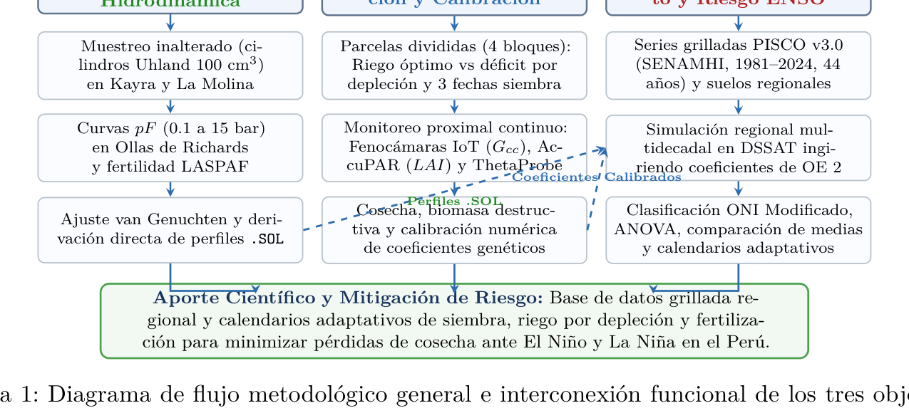
Figura 1. Diagrama de flujo metodológico general e interconexión funcional de los tres objetivos específicos (OE 1, OE 2 y OE 3) orientados a la mitigación de riesgos por El Niño y La Niña.
En K'ayra (3,219 msnm) y La Molina (240 msnm) se excavan calicatas de 1.5 × 1.5 × 1.2 m para extraer cilindros Uhland (100 cm³) en tres profundidades (0–20, 20–40 y 40–60 cm) por cuadruplicado. Tras saturación capilar de 48 h, se someten a seis potenciales mátricos (0.10, 0.33, 1.0, 3.0, 5.0 y 15.0 bar) en cámaras Richards Modelos 1600 y 1500 (UNSAAC), complementado con análisis físico-químicos en LASPAF-UNALM.
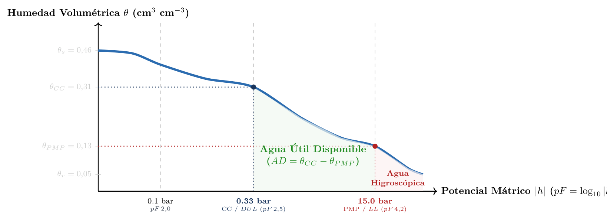
Figura 3. Curva característica de retención de humedad ajustada al modelo de van Genuchten delimitando el Agua Útil Disponible (AD = θ_CC − θ_PMP).
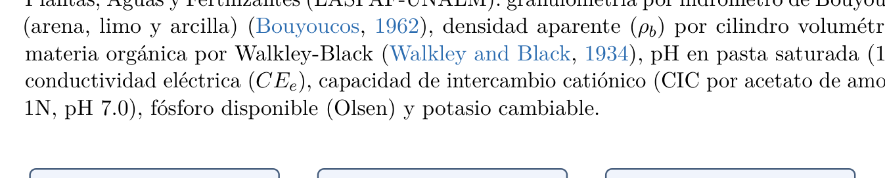
Figura 2. Flujo de caracterización física, química e hidrodinámica del suelo para derivar parámetros directos (SAT, DUL, LL) en perfiles .SOL.
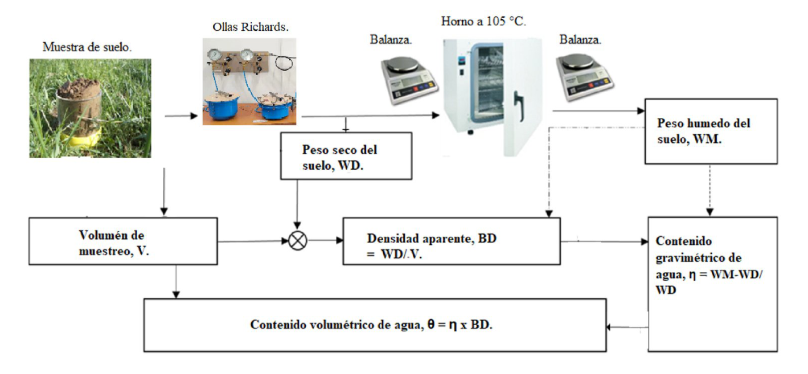
Figura 4 (Anexo B). Flujo operativo con cilindros inalterados, ollas de Richards, secado a 105 °C y conversión a contenido volumétrico de agua (θ = η × BD).
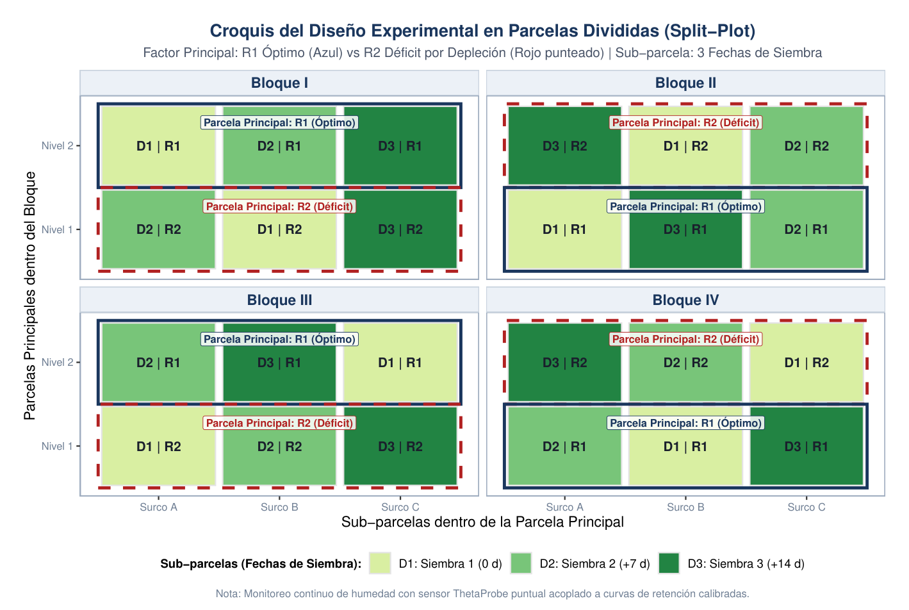
Figura 5. Diseño en parcelas divididas (split-plot) con 4 bloques completos al azar, 2 regímenes hídricos (R1 óptimo vs R2 déficit por depleción 50–60% AD) y 3 fechas de siembra semanales (D1, D2, D3): 24 sub-parcelas por localidad.
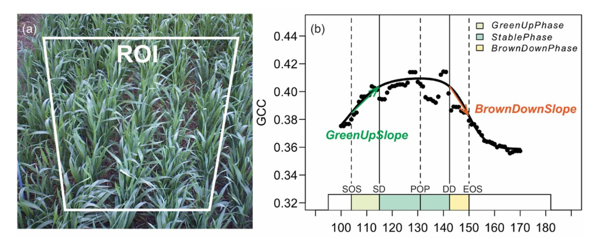
Figura 6. Fenotipado proximal continuo con 8 fenocámaras ESP32-CAM (1.5 m en papa, 2.5 m en maíz, inclinación 60°): (a) delimitación de ROI; (b) serie temporal GCC90 ajustada con regresión logística doble (SOS, SD, POP, DD, EOS).
Mediciones semanales (11:30–13:30 h) de fPAR y LAI con ceptómetro AccuPAR LP-80
y control hídrico in situ en estratos 0–20 y 20–40 cm mediante sensor puntual ThetaProbe ML3.
Muestreos destructivos quincenales desde los 25 DDE (SLA, materia seca, HI) y análisis bromatológico en LENA-UNALM: proteína micro-Kjeldahl, almidón, FDN/FDA, energía Parr, Fe y Zn.
Integración de archivos .EXP, File A y File T para calibrar
SUBSTOR-Potato (G2, G3, PD, TC, P2) y CERES-Maize (P1, P2, P5, G2, G3, PHINT).
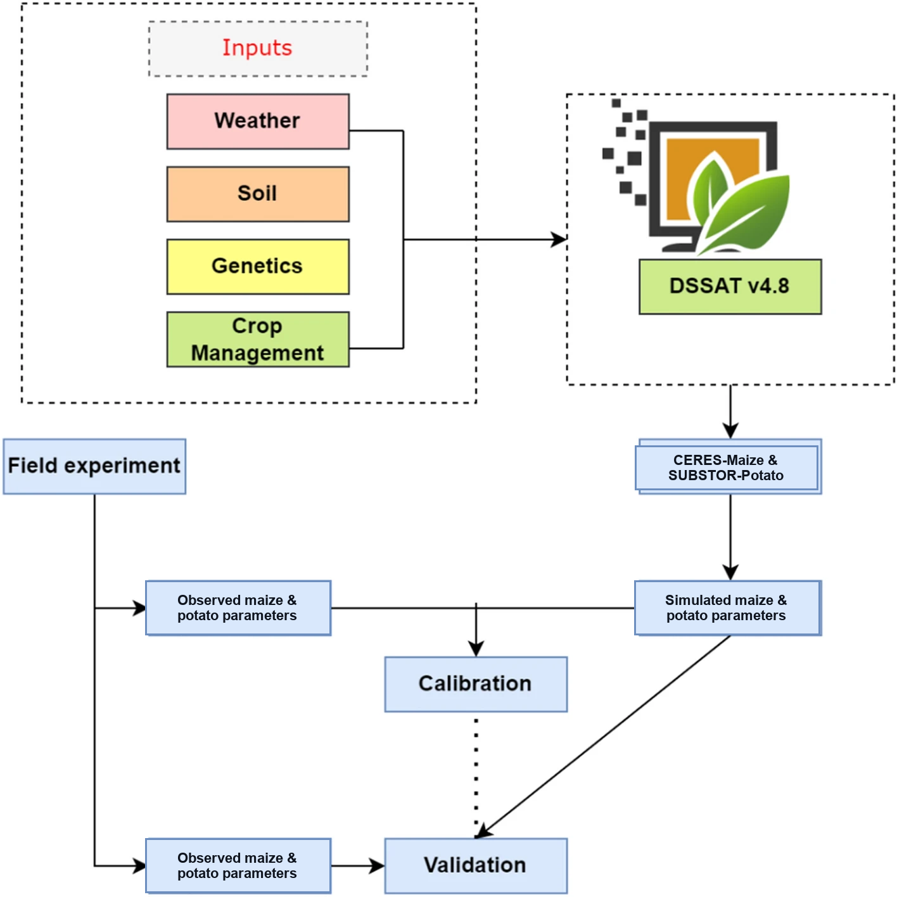
Figura 6B. Esquema de calibración y validación en DSSAT v4.8 acoplando experimentos de campo (parámetros observados) con los módulos CERES-Maize y SUBSTOR-Potato.
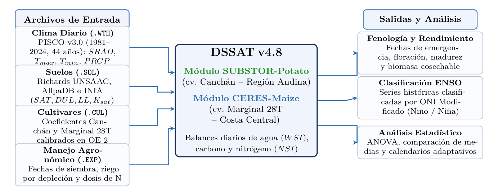
Figura 7. Flujo computacional de DSSAT v4.8 ingiriendo series PISCO v3.0 (1981–2024, .WTH), suelos regionales (AllpaDB, INIA, SoilGrids 2.0) y cultivares calibrados en OE 2.
Las 44 campañas agrarias se clasifican mediante el ONI Agronómico Modificado (ONI_agr promedio de
SON, OND, NDJ y DJF: El Niño ≥ +0.5 °C, La Niña ≤ −0.5 °C). Las salidas simuladas se evalúan con
ANOVA trifactorial (Fase ENSO × Riego × Fecha de Siembra) y pruebas Tukey/Duncan (α = 0.05):
Las métricas de validación exigen nRMSE < 15% e índice de Willmott refinado d_r > 0.85.
Planificación temporal de las actividades de campo, laboratorio, modelamiento, tesis y publicaciones.
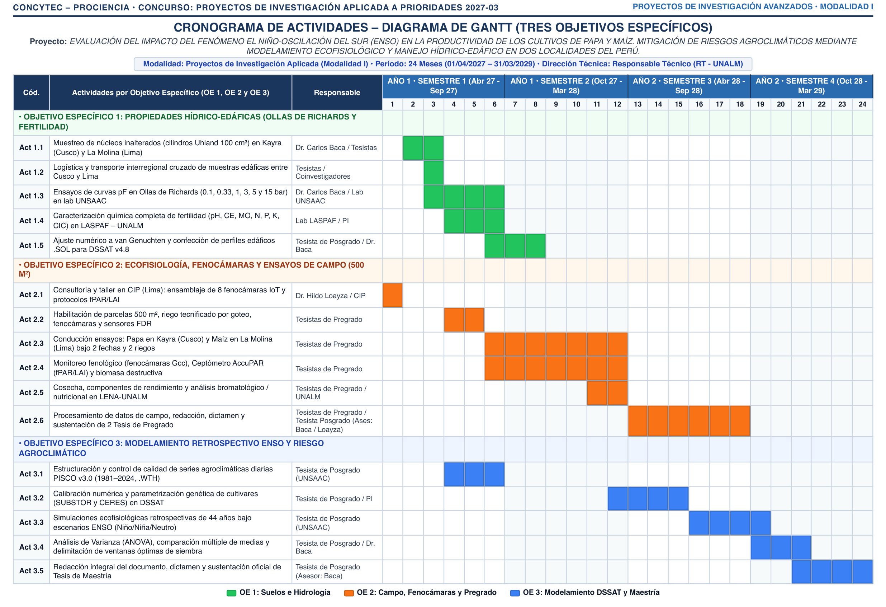
Figura 8. Cronograma oficial de 24 meses (4 semestres) organizado por OE 1 (Suelos e Hidrología), OE 2 (Campo, Fenocámaras y Pregrado) y OE 3 (Modelamiento DSSAT y Maestría). Ver matriz analítica completa en Quarto →
A diferencia de los entregables administrativos, los resultados científicos constituyen la contrastación empírica y computacional de las tres hipótesis del proyecto al término de los 24 meses de ejecución.
Cuantificación del sesgo de ecuaciones genéricas (Saxton & Rawls) frente a curvas pF medidas en Ollas de Richards, logrando ahorros de agua del 20% al 30% mediante riego por umbral de agotamiento permisible (MAD) sin pérdida comercial.
Primeros coeficientes genéticos calibrados para papa cv. Canchán y maíz cv. Marginal 28T
(nRMSE < 15%, d_r > 0.85), más ecuaciones empíricas de merma en almidón,
proteína cruda, Fe y Zn bajo estrés térmico-hídrico.
Reconstrucción de 44 campañas en PISCO v3.0 demostrando el impacto asimétrico de El Niño y La Niña, y delimitando ventanas de siembra y láminas óptimas que reducen pérdidas entre 20% y 35%.
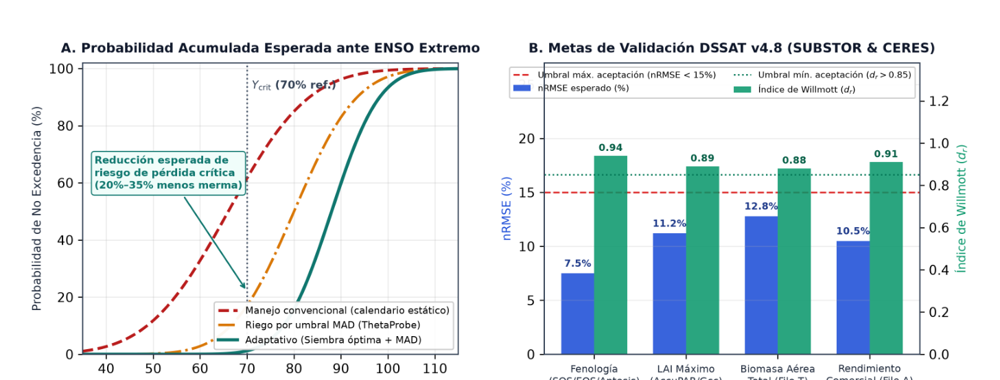
Figura 9. (A) Curvas de probabilidad acumulada de rendimiento relativo bajo ENSO extremo comparando manejo convencional vs. adaptativo; (B) metas de calibración en fenología, LAI, biomasa y rendimiento (nRMSE < 15%, d_r > 0.85).
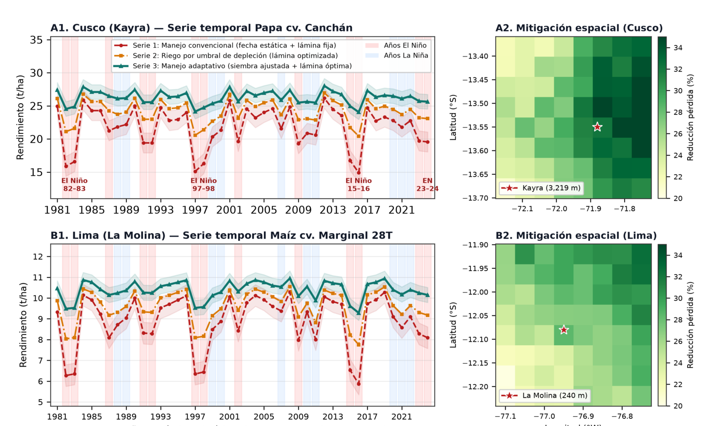
Figura 10. Reconstrucción multidecadal ilustrativa (1981–2024, PISCO v3.0) para papa cv. Canchán en Cusco (A1–A2) y maíz cv. Marginal 28T en Lima (B1–B2), proyectando reducciones de pérdida del 20% al 35% durante episodios El Niño.
Sinergia interregional entre la costa central y la sierra sur andina del Perú.

Entidad Solicitante. Ensayo de maíz en La Molina, análisis químicos en LASPAF, calidad nutricional en LENA, Estación Humboldt y dirección científica.

Entidad Asociada. Ensayo de papa en K'ayra, curvas pF en Ollas de Richards (Lab. de Riego), tesis de maestría y pregrado en Cusco.

Socio Técnico. Adaptación de fenocámaras IoT de bajo costo (ESP32-CAM) y estandarización de protocolos de ceptometría (LAI/fPAR).
Equipos biofísicos, librerías de modelamiento y protocolos FAIR empleados en la metodología del proyecto.
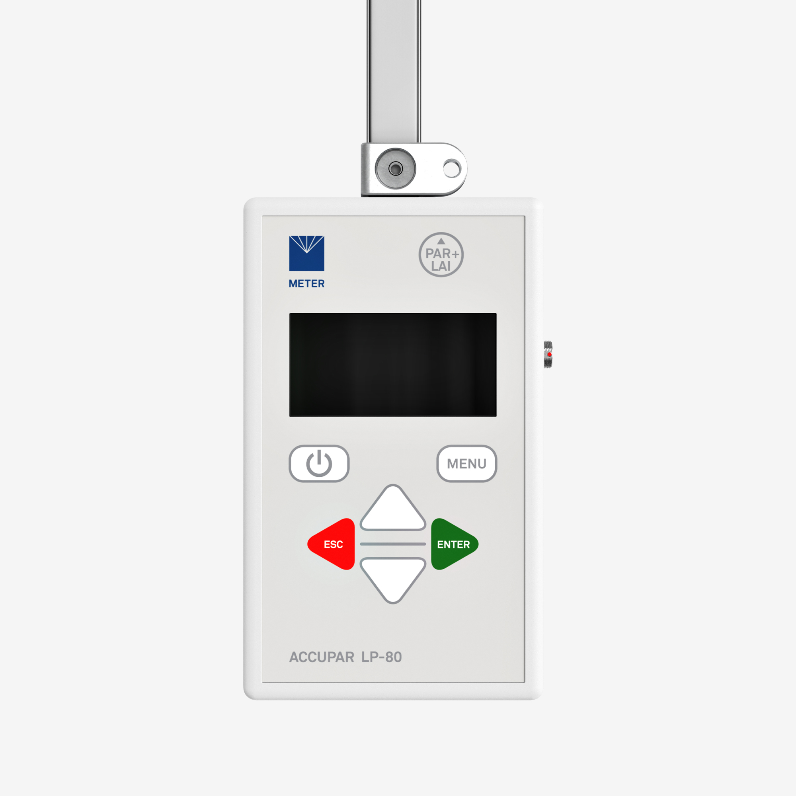
METER Group (80 sensores cuánticos PAR, 400–700 nm). Medición semanal no destructiva de
fPAR e Índice de Área Foliar (LAI).
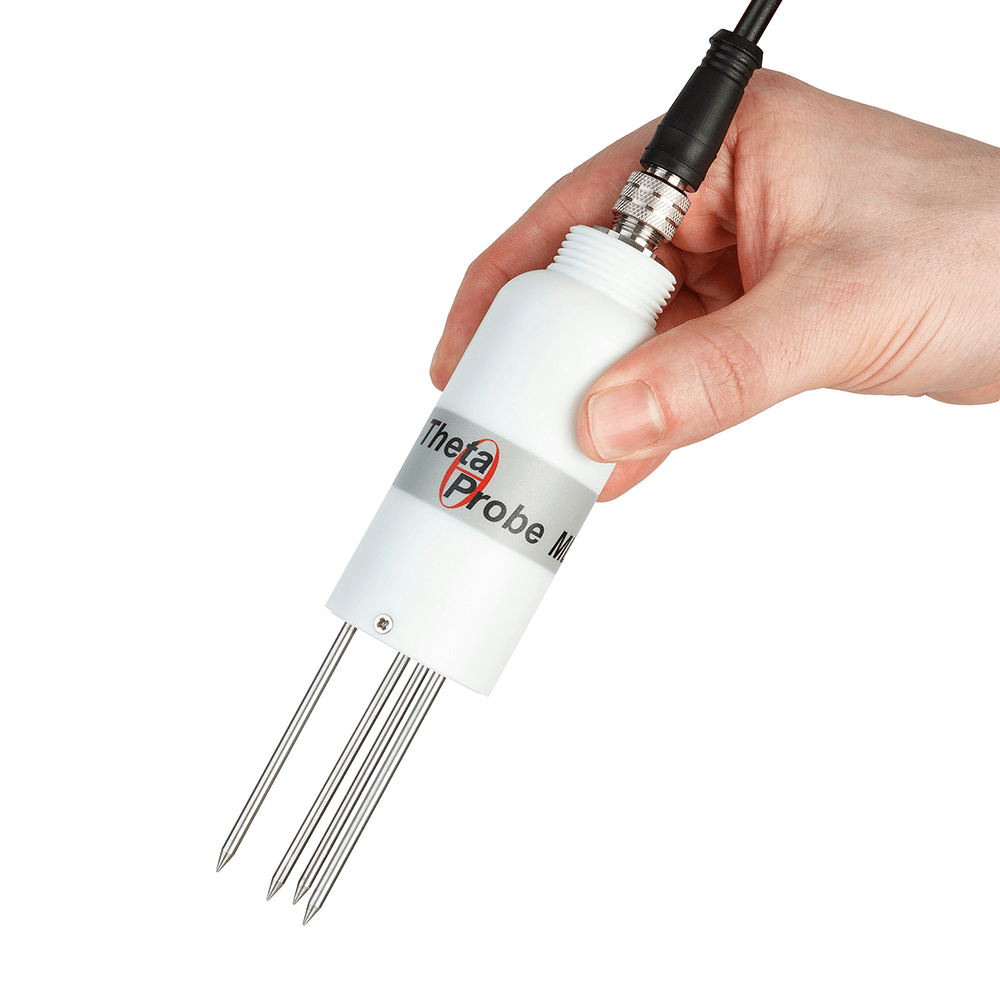
Delta-T Devices (impedancia a 100 MHz). Control puntual de humedad volumétrica (VWC) a
0–20 y 20–40 cm para activar riego por umbral MAD.
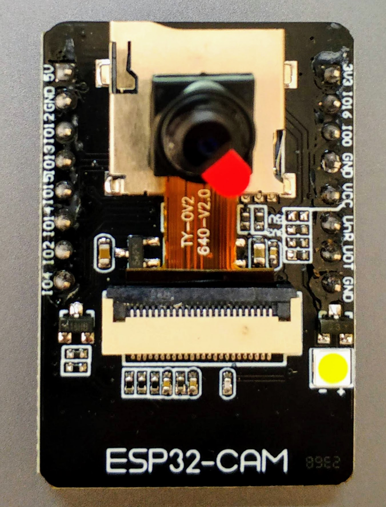
8 nodos autónomos RGB (1.5 m en papa, 2.5 m en maíz). Registro horario para series
GCC y ajuste logístico doble (SOS, POP, EOS).
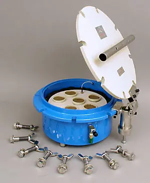
Soilmoisture Equipment Corp. (UNSAAC). Curvas experimentales pF de 0.1 a 15.0 bar
sobre cilindros Uhland de 100 cm³.
Módulos SUBSTOR-Potato y CERES-Maize, calibración bayesiana
GCE / GLUE, archivos .SOL, .WTH, .CUL, .EXP, File A, File T.
Ajuste no lineal Levenberg-Marquardt (van Genuchten), procesamiento RGB
GCC/ExG, ANOVA multifactorial, pruebas Tukey/Duncan y firmware ESP-IDF.
Grilla climática diaria SENAMHI (1981–2024), perfiles de suelo AllpaDB /
SoilGrids 2.0, y análisis bromatológico AOAC (Kjeldahl, ANKOM, Parr, FAAS).
Planos de montaje, código abierto de captura cenital y ajuste logístico doble de cobertura verde (GCC/ExG).
Protocolo de muestreo Uhland, curvas de retención en Ollas de Richards y ajuste de van Genuchten.
Fuentes oficiales para monitoreo ENSO, modelamiento de cultivos, investigación en papa y datos climáticos.
Monitoreo oficial del Índice Oceánico El Niño (ONI) para clasificación climática de campañas.
Visitar NOAA ONI v6 →Portal oficial del sistema de soporte de decisiones para transferencia de agrotecnología.
Visitar DSSAT →Centro Internacional de la Papa: investigación andina, fenotipado proximal y seguridad alimentaria.
Visitar CIP →Instituto Internacional de Investigación para el Clima y la Sociedad (productos climáticos y PISCO).
Visitar IRI Columbia →Concurso CONCYTEC–PROCIENCIA E041-2027-03 · UNALM & UNSAAC.
Entidad Solicitante: Universidad Nacional Agraria La Molina (UNALM), Lima.
Entidad Asociada: Universidad Nacional de San Antonio Abad del Cusco (UNSAAC), Cusco.